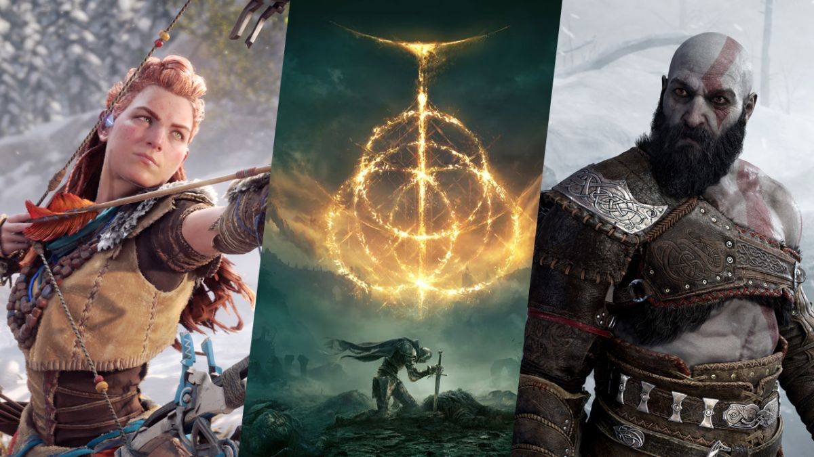

{kind=link}
History
The PlayStation 5 (PS5) is a home video game console developed by Sony Interactive Entertainment. Announced as the successor to the PlayStation 4 in April 2019, it was launched on November 12, 2020, in Australia, Japan, New Zealand, North America, and South Korea, with worldwide release following a week later. The PS5 is part of the ninth generation of video game consoles, along with Microsoft's Xbox Series X and Series S consoles, which were released in the same month.
The base model includes an optical disc drive compatible with Ultra HD Blu-ray discs. The Digital Edition lacks this drive, allowing it to serve as a lower-cost model for those who prefer to buy games through digital download. The two variants were launched simultaneously.
The PlayStation 5's main hardware features include a solid-state drive customized for high-speed data streaming to enable significant improvements in storage performance, an AMD GPU capable of 4K resolution display at up to 120 frames per second, hardware-accelerated ray tracing for realistic lighting and reflections, and the Tempest Engine allowing for hardware-accelerated 3D audio effects. Other features include the DualSense controller with haptic feedback and backward compatibility with the majority of PlayStation 4 and PlayStation VR games.
Game library
Each PlayStation 5 console comes pre-installed with Astro's Playroom, a game designed to serve as a demonstration of the DualSense controller. Games are not region-locked, so games purchased in one region can be played on consoles in all regions.
Sony announced its concurrent responsibilities of supporting the PlayStation 4 community, and embracing the PlayStation 5 as a major technological advancement. In an interview with GamesIndustry.biz, Ryan stated "We have always said that we believe in generations. We believe that when you go to all the trouble of creating a next-gen console, that it should include features and benefits that the previous generation does not include. And that, in our view, people should make games that can make the most of those features." Discussing the capabilities of the DualSense controller with Geoff Keighley, General manager Eric Lempel affirmed that Sony "wants to evolve every part of the experience", but for that to happen "we can't take everybody with us from previous consoles into a next-generation experience. You need new hardware, you need new devices to experience what these developers want you to experience." Ratchet & Clank: Rift Apart was highlighted as a next-generation game that is not technically possible on older hardware. Lempel assured Keighley that interest in PlayStation 4 will not end abruptly, with more to come.
Sony's definition of consoles as distinct generations had been widely interpreted as an era-defining shift to PS5-exclusive games that exploit the console's capabilities instead of releasing cross-generation games that play a gcross both PlayStation consoles. Ryan said that there should be no disappointment as the PS5 versions take advantage of the console's advanced feature set and initially planned that PS4 versions can be freely upgraded. Few major games such as Horizon Forbidden West are developed as concurrent releases for PS4 and PS5, and Sony supports any publisher that wants to offer enhanced versions of PS4 games at no additional cost. However, in May 2021, Sony announced a major shift in this approach, with previously PS5-exclusive games Gran Turismo 7 and God of War Ragnarök now planned as both PS4 and PS5 games. Game journalists believed this was a factor related to impact of the global semiconductor shortage from the COVID-19 pandemic on PlayStation 5 availability. Sony initially had planned to charge PS4 users to upgrade to the PS5 version of Horizon Forbidden West when preorders were announced, but after negative feedback from consumers (who pointed out that Sony had previously mentioned that Horizon Forbidden West would have a free upgrade), stated that this upgrade will be free, but all future PS4 to PS5 upgrades from their first-party games will be at cost, reversing course from their earlier plans. Eurogamer reported that Sony's certification program as of May 2020 required PS4 games, submitted for certification after July 13, 2020, to be natively compatible with the PlayStation 5.